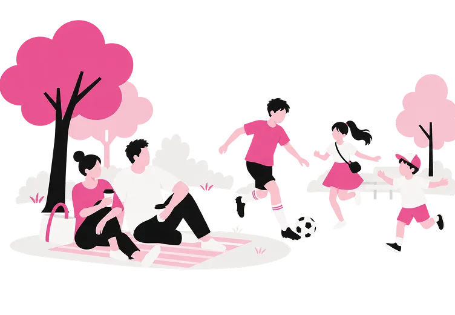

01
デザインを始めた理由
きっかけは、家族の写真でした。
もっときれいに残したくて、独学でPhotoshopを触り始めたのが最初です。
その頃はまだ、これが仕事になるとは思っていませんでした。
子育て中の私にとって、自宅でできることは必須の条件でした。
けれど、それは「妥協」ではありません。
限られた時間の中で何を優先するか——
子どもが生まれてから身についた段取り力は、
今、制作の進め方そのものに生きています。
